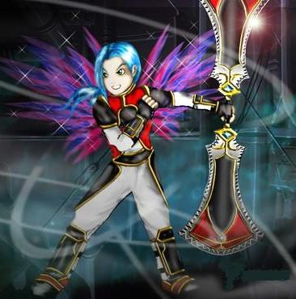

Forums galactiques > Assemblée Galactique : diplomatie officielle > [RP] Maison Cronosite
Pages : 1
| M. Hèra Respect diplomatique : 738  18/05 ETU 20:20 | Score : 15 Détails
Malicia s’était installé avec ses amis sur la natal de Cronos… Une fois partit du Poltergeist elle avait crée sa coalition dans le palais même de son frère… Et le venu de Yuan ne venait que perpétrer cette tradition… Flashback La scène se passait dans le salon du Palais de Malicia… Elle était avec sa nièce Flay quand un garde vint les interrompre… - Madame madame quelqu’un vient… - Faite le venir jusqu'à nous… Après quelques minutes, Flay bondit de joie et alla dans les bras de l’homme qui venait d’apparaître… Yuan Cronos… Le fils de Cronos et le frère de Flay… Cet être si étrange qui était à l’origine de la fortune de la famille Cronosite… Morgane se rappelait encore quand Flay et Yuan était les deux plus grandes fortunes d’espérance et qu’il était dans la plus grande coalition de l’époque… Après cela ils étaient venus se joindre à leur père… Yuan alla ensuite dans les bras de sa tante… - Heureux d’enfin te connaître... Fin du Flashback Ils étaient tous dans le palais… Réunit dans le salon pour parler du bon vieux temps… La famille Cronosite ne faisait que commencer à regrandir… Et bientôt là venu de nouveau Cronos ne ferait qu’augmenter leur force et leur solidarité… | ||
| Flay Cronos Respect diplomatique : 54 19/05 ETU 11:13 | Score : 9 Détails Flay n’en revenait pas, elle se disait que tout ceci ne devait être qu’un merveilleux rêve.
Après ses retrouvailles avec sa tante, voilà, que Yuan sont frère réapparaissait. Flay n osait y croire…… * Ma chère tante, dit moi que tout ceci est bien réel Flay se dirigea vers Yuan, lui saisie les mains, afin de s’assurer que tout ceci ne venait pas de son imagination. Incroyable, ce disait elle à ce moment précis, Mon frère est bel et bien là, ce n’était donc pas une illusion……….…… Yuan, quel bonheur !!! Flay, serra son frère très fort dans ces bras, elle ne voulait plus le lâcher de peur que celui-ci ne lui échappe à nouveau. | ||
| yuan cronos Respect diplomatique : 6  19/05 ETU 20:16 | Score : 6 Détails Eh Flay ! Doucement… je ne vais pas me sauver !
Flay lacha enfin Yuan... Ca fait plaisir de tous vous revoir, je sais que je vous ai manqué et que j’aurais due vous donner de mes nouvelles toutes ces années, mais je n’ai vraiment pas eu le temps lors de mes voyages intergalactiques, mais je ne vais pas vous ennuyer avec tous cela en ce jour de retrouvaille. La famille Cronosite se retrouva dans une étreinte interminable… | ||
| M. Hèra Respect diplomatique : 738 23/05 ETU 12:43 | Score : 11 Détails Malicia était en route vers la planète natale de son frère Yuan… Il allait lui prendre des affaires pour habiter dans le QG de la famille…
Arrivé là-bas, elle demanda à ces servants d’aller chercher les valises posées sur le lit au 2 eme étage… Elle alla dans le salon… Voir ce qu’était devenu cet ancien palais… - Vous voulez boire quelque chose madame ? dit le serveur. - Oui une Vodka s’il vous plaît. - Bien madame. Une femme arriva dans la salle… Morgane ne la connaissait pas… Elle était mains, avait les cheveux rouge et avait un regard chaleureux… On aurait dit un ange venu de nulle part… Elle s’avança vers elle et lui demanda : - Excusez-moi mais vous êtes qui ? dit la fille. - Je suis Malicia ! Mais d’abord qu’est ce que vous êtes venu faire ici et qui vous a laisser entrer… - O vous savez j’ai vécu ici pendant quelque temps donc je sais par ou passer… - Mais seul Yuan mon frère a habité ici… - Non mais Yuan est mon frère pas le votre et il est mort… - Vous êtes qui vous ? - Corti Cronos… Malicia eut un choque… Encore une Cronosite qui revient d’entre la mort… Est-ce que la haute personne ne les veut ? Ou alors quelque chose doit se produire ? Pourquoi tout les Cronosite reviennent t’il d’un coup… Cela paraissait étrange et Malicia le savait parfaitement… - Je suis Malicia, plus proprement appelé Morgane… Morgane Cronos la sœur de ton père… Je suis donc ta Tata… J’avais lu quelque part ta naissance mais je ne t’ai jamais rencontré…Pourquoi tu as ressuscité et comment ? Corti alla se serrer fort dans les bras de Malicia… Enfin quelque de familier quel voyait à par son père dans le royaume des morts… Elle se desserra d’elle et lui répondit ! - Je ne savais pas du tout que mon père avec une sœur et je suis maintenant heureux de l’apprendre… Pour ce qui est de ma résurrection… Je ne sais pas pourquoi mais apparemment il ne veut pas de nous la haut… J’ai entendu dire que Yuan et Flay avait déjà été renvoyé et Detah et mon père vont bientôt nous rejoindre… Peut être ils nous en apprendront plus sur cela… - Oui surement… En tout cas vient je vais te présenter ta sœur et on frère… | ||
| Flay Cronos Respect diplomatique : 54 23/05 ETU 18:23 | Score : 7 Détails Flay venait de rejoindre Malicia sur la planète de Yuan ,intriguée par les voix, elle s’approcha en tendant l' oreille....
Tante Malicia, c’est toi ??? Je ne savais pas que nous attendions de la visite..... Dis-moi, mais qui est donc cette jeune personne ? Il ne me semble pas que l'on ce connaissent !!! Flay était sûr de ne jamais avoir rencontré cette jeune femme et pourtant,les traits de son visage ne lui semblait pas inconnu .... | ||
| M. Hèra Respect diplomatique : 738 23/05 ETU 18:54 | Score : 8 Détails
Flay venait d’entrer dans le palais impérial de Yuan… Elle était stupéfaite de voire cette jeune femme mais en même temps elle la regarda d’un œil égaré… - Voila ma puce… Je te présente ta demi-sœur… Corti Cronos… - En faite je t’explique… A la fin de la grande guerre, ta mère s’est exilée sur une planète pour éviter le démentiellement de l’armé des morts et les têtes qui allaient se couper… Je sais que la planète était dans un système d’un amis à Cronos mais après je ne sais pas laquelle…. Mais tu sais ta mère t’aimait beaucoup mais elle fut tellement affectés par cela qu’elle ne donna plus aucun signe de vie au retour de Cronos et pourtant je sais qu’il la cherché jusqu’au bout de la galaxie… Mais malheureusement sans succès… Alors Cronos fou de rage envers lui-même, à abandonner les recherches et sait renfermer sur lui-même… Mais cela à été de courte durés car il a rencontré la mère à corti qui était une servante qui lui emmenait tous les matins sont cafés… Elle fut tuée à la mort de Corti… - Effectivement je l’ai vu au royaume des morts… Flay resta bouche bée… Elle avait une demi-sœur et cela était dure à apprendre… Surtout passés temps de temps avec son père dans le royaume des morts et jamais il ne l’avait vu comme si leur destin ne devait pas se croiser… Et maintenant elle la voyait… Cette femme qui était sa sœur… Elle savait qu’elle aurait du mal à l’accepter mais elle le devait… Elle dit après un moment en sortant de ses pensés… - Rentrons maintenant je veux annoncer la nouvelle à Yuan et cela te permettra de le voir Corti… - Bonne idées… dit t’elle… Sur cela après avoir pris les affaires, ils repartirent en directions de la Maison… | ||
| M. Hèra Respect diplomatique : 738 25/05 ETU 19:55 | Score : 7 Détails Yuan, Flay et Malicia venait d’atterrir sur la planète QG… Ils suivirent les jardins… On pouvait apercevoir des jardiniers… Prendre soins de leur plante comme si c’était leur femme… Comme si c’était l’amour de leur vie… Quel beau métier pensa Malicia… Un garde du corps leur ouvrit la porte…
Et là… Ils eurent un choque… Un Cronos… Detah… Detah se retourna et leur fit face de sa stature majestueuse… Il était beau comme un dieu… Mais il avait un petit quelque chose en plus… Il avait changé et cela Malicia le savait… Elle l’avait vu plusieurs fois… Croisé dans un couloir dans leur ancien palais mais jamais elle ne lui avait adressé la parole… Son frère lui avait interdit… - Je suis heureux de tous vous revoir… Flay… Yuan… Corti… Morgane… Ou plutôt Malicia… - Je suis heureux de te revoir… Mais que se passe-t-il ? Pourquoi tous les Cronos reviennent à la vie comme cela… Que ce passe t’il la haut… - Je vais y venir ma petite Malicia… Tout commença quand père et moi sommes morts… Nous ne savions pas ce qui nous attendait mais nous n’avions pas peur… Et c’est cela qui nous à fais allez vers celui qui nous à persécuté pendant plusieurs années… Le diable ou plutôt l’utopie du mal en personne… Nous étions tellement droits comme il nous frappait… Tellement robuste… Et tellement, je ne sais pas comment le dire mais nous n’avions pas peur et nous savions qu’un jour il le payera… Il eut peur de cela et il décida de nous envoyer encore plus haut... Mais malheureusement je ne sais pas ce qu’il y a là-bas… Au moment du transfert… Il y avait plusieurs serpents qui nous entouraient… - Les serpents sont des créatures qui défendent le monde des ténèbres et font le bon désir du diable… Et nous ne savions que faire pour ne pas mourir ou plutôt allez plus haut… Alors il c’est passé une chose extraordinaire… Nous nous sommes pris nos mains… Et là un jains de lumière noir s’en est dégagé… C’était comme si nous étions en transe… Cette lueur noir à envahit toute la pièce et emporter tout les serpents… Et quand il fut sur le diable père à faillis de ces mains une dague et la transpercer… Et depuis ce temps, la malédiction ne fait que nous suivre… - Nous sommes obligé de retourné sur terre pour je ne sais qu’elle raison et cela l’un après l’autre… Il reste encore ma mère et quelque Cronos mais Père essai de déjoué cette enchantement… Il pense que le Diable avant de partir à voulu nous faire revenir sur terre pour que nous soyons à jamais pris dans le trou noir qui arrive… - Pendant ce temps il a pris la tête du royaume du mal mais cela ne sera que de courte durée s’il n’arrive pas à trouver une solution… - Nous allons revenir les un après les autres… - La famille Cronosite va bientôt être au grand complet… Ces déclarations avait laissé un froid complet sur l’ensemble de la Famille… Et chacun attendait que l’autre parle… |
Pages : 1
Forums galactiques > Assemblée Galactique : diplomatie officielle > [RP] Maison Cronosite